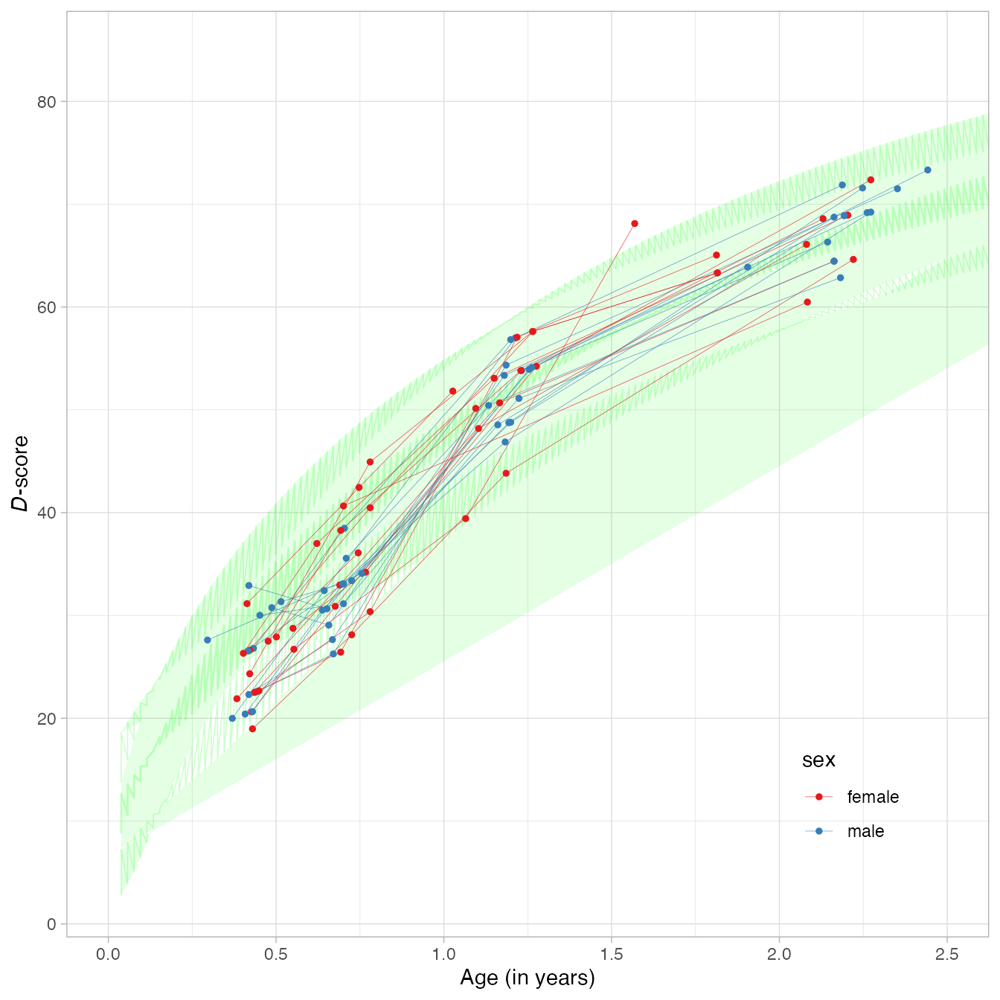
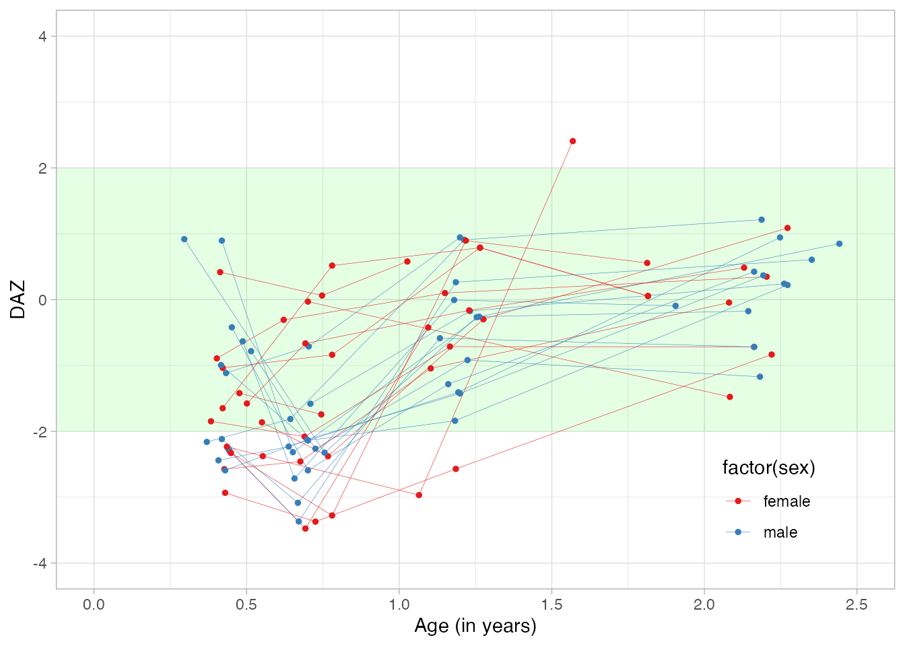
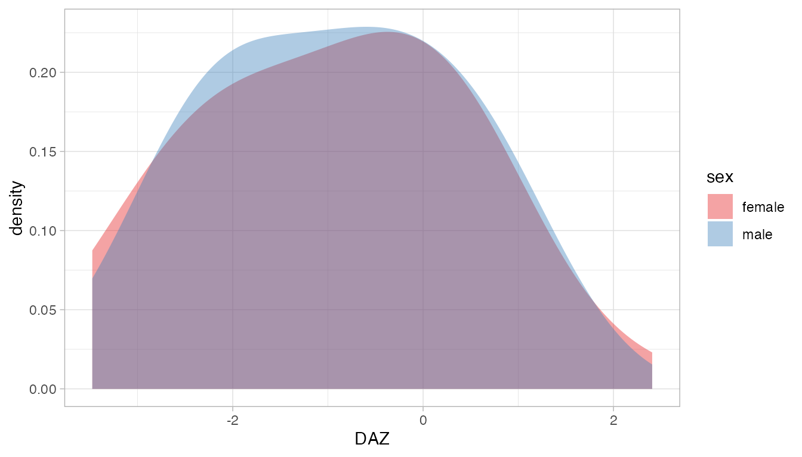

The D-score is a one-number summary measure of early child development. The D-score has a fixed unit. In principle, we may use the D-score to answer questions on the individual, group and population level, but be aware that no instruments have yet been validated for individual application. For more background, see the introductory booklet D-score: Turning milestones into measurement.
This vignette shows how to estimate the D-score and the D-score age-adjusted Z-score (DAZ) from child data on developmental milestones. The vignette covers some typical actions needed when estimating the D-score and DAZ:
dscore package covers your
measurement instrument;The dscore package covers a subset of all possible
assessment instruments. Moreover, it may have a restricted age range for
a given instrument. Your first tasks are
dscore package can
convert your measurements into D-scores;key that best suits your objectives.The inventory by Fernald et al. (2017) identified 147 instruments for assessing the development of children aged 0-8 years. Well-known examples include the Bayley Scales for Infant and Toddler Development and the Ages & Stages Questionnaires. The D-score is defined by and calculated from, subsets of milestones from such instruments.
Assessment instruments connect to the D-score through a
measurement model. We use the term key to refer to a
particular instance of a measurement model. The dscore
package currently supports the following keys (in historic order):
dutch, a model developed for the Dutch development
instrument;gcdg, a model covering 14 instruments using
direct measurements;gsed1912, covers 20 instruments using a mix of
direct and caregiver-reported measurements (Dec
2019);293_0, covers only GSED SF (138 items) and GSED LF (155
items). GSED core model. (Aug 2022)gsed2212, covers 23 instruments using a mix of
direct and caregiver-reported measurements. Extends
the GSED core model. (Jan 2022).Different keys lead to different D-scores. Hence, we may compare only D-scores that are calculated under the same key. Our advice to set the key is:
key = "gsed". This choice
will automatically fetch the latest GSED key;key = "gsed2212". The ignores later keys.dutch, gcdg or
gsed1912 to regenerate old results. These are unlikely to
be useful for new data;gsed2206, gsed2208,
lf2206, sf2006 and 294_0. These
are available for research purposes, and will be removed in future
versions.The table given below displays the number of items per instrument for various keys. If the entry is blank, the key does not cover the instrument.
| Code | Instrument | Items | dutch | gcdg | gsed1912 | gsed2212 | 293_0 |
|---|---|---|---|---|---|---|---|
aqi |
Ages & Stages Questionnaires-3 | 230 | 29 | 17 | 17 | ||
bar |
Barrera Moncada | 22 | 15 | 13 | 13 | ||
bat |
Battelle Development Inventory and Screener-2 | 137 | |||||
by1 |
Bayley Scales for Infant and Toddler Development-1 | 156 | 85 | 76 | 76 | ||
by2 |
Bayley Scales for Infant and Toddler Development-2 | 121 | 16 | 16 | 16 | ||
by3 |
Bayley Scales for Infant and Toddler Development-3 | 320 | 105 | 67 | 67 | ||
cro |
Caregiver Reported Early Development Instrument (CREDI) | 149 | 62 | 64 | |||
ddi |
Dutch Development Instrument (Van Wiechenschema) | 77 | 76 | 65 | 64 | 64 | |
den |
Denver-2 | 111 | 67 | 50 | 50 | ||
dmc |
Developmental Milestones Checklist | 66 | 43 | 43 | |||
gri |
Griffiths Mental Development Scales | 312 | 104 | 93 | 18 | ||
gs1 |
GSED SF (v1, Phase 2 validation) | 139 | 138 | ||||
gl1 |
GSED LF (v1, Phase 2 validation) | 155 | 155 | ||||
gh1 |
GSED HF (v1, JAN 2023 version 20230113) | 55 | 55 | ||||
gto |
GSED LF (v0, Phase 1 validation) | 155 | 155 | 155 | |||
gpa |
GSED SF (v0, Phase 1 validation) | 139 | 138 | 138 | |||
iyo |
Infant and Young Child Development (IYCD) | 90 | 55 | 57 | |||
kdi |
Kilifi Developmental Inventory | 69 | 48 | 48 | |||
mac |
MacArthur Communicative Development Inventory | 6 | 3 | 3 | 3 | ||
mds |
WHO Motor Development Milestones | 6 | 1 | 1 | |||
mdt |
Malawi Developmental Assessment Tool (MDAT) | 136 | 126 | 126 | |||
peg |
Pegboard | 2 | 1 | 1 | 1 | ||
pri |
Project on Child Development Indicators (PRIDI) | 63 | |||||
sbi |
Stanford Binet Intelligence Scales-4/5 | 33 | 6 | 5 | 5 | ||
sgr |
Griffiths for South Africa | 58 | 19 | 19 | 19 | ||
tep |
Test de Desarrollo Psicomotor (TEPSI) | 61 | 33 | 31 | 31 | ||
vin |
Vineland Social Maturity Scale | 50 | 17 | 17 | 17 | ||
| 76 | 565 | 807 | 818 | 293 | |||
| Extensions | |||||||
ecd |
Eerly Child Development Indicators (ECDI) | 20 | 18 | ||||
mul |
Mullen Scales of Early Learning | 232 | 138 |
Unfortunately, it is not possible to calculate the D-score if your
instrument is not on the list, or if all of its entries under the key
headings are blank. You may wish to file an extension request to
incorporate your instrument in a future version of the
dscore package. It remains an empirical question, however,
whether the requested extension is possible.
For some instruments, e.g., for cro only one choice is
possible ("gsed"). For gri, we may choose
between "gcdg" and "gsed1912" or
"gsed2212". Your choice may depend on the goal of your
analysis. If you want to compare to other D-scores calculated under key
"gcdg", or reproduce an analysis made under that key, then
pick "gcdg". If that is not the case, then
"gsed2212" is probably a better choice because of its
broader generalizability. The default key is "gsed". Before
version 1.5.0 the default linked to "gsed1912". Since
version 1.7.0 the default selects "gsed2212".
The extensions for Mullen were added to the “"gsed1912"
key. The extension was made based on two datasets, the Provide dataset
(Nelson) and
the Bambam dataset (Deoni). The Mullen items were matched to
existing items and two well fitting items were selected as anchors in a
new model on the combined Provide and Bambam data.
The designs of the original cohorts determine the age coverage for
each instrument. The figure above indicates the age range currently
supported by the "gsed2212" key. Some instruments contain
many items for the first two years (e.g., by1,
dmc), whereas others cover primarily upper ages (e.g.,
tep, ecd). If you find that the ages in your
sample deviate from those in the figure, you may wish to file an
extension request to incorporate new ages in a future version of the
dscore package.
The dscore() function accepts item names that follow the
GSED 9-position schema. A name with a length of nine characters
identifies every milestone. The following table shows the construction
of names.
| Position | Description | Example |
|---|---|---|
| 1-3 | instrument | by3 |
| 4-5 | developmental domain | cg |
| 6 | administration mode | d |
| 7-9 | item number | 018 |
Thus, item by3cgd018 refers to the 18th item in the
cognitive scale of the Bayley-III. The label of the item can be obtained
by
library(dscore)
get_labels("by3cgd018")## by3cgd018
## "Inspects own hand"You may decompose item names into components as follows:
decompose_itemnames(c("by3cgd018", "denfmd014"))## instrument domain mode number
## 1 by3 cg d 018
## 2 den fm d 014This function returns a data.frame with four character
vectors.
The dscore package can recognise 3843 item names. The
expression get_itemnames() returns a (long) vector of all
known item names. Let us construct a table of instruments by
domains:
items <- get_itemnames()
din <- decompose_itemnames(items)
knitr::kable(with(din, table(instrument, domain)), format = "html") |>
kableExtra::column_spec(1, monospace = TRUE)| ad | cg | cl | cm | co | eh | ex | fa | fm | fr | gm | hd | hs | la | lg | li | md | mo | NA | pd | px | re | se | sl | vs | wm | xx | |
|---|---|---|---|---|---|---|---|---|---|---|---|---|---|---|---|---|---|---|---|---|---|---|---|---|---|---|---|
| aqi | 0 | 0 | 0 | 63 | 0 | 0 | 0 | 0 | 61 | 0 | 62 | 0 | 0 | 0 | 0 | 0 | 0 | 0 | 1 | 0 | 68 | 0 | 0 | 67 | 0 | 0 | 0 |
| bar | 0 | 0 | 0 | 0 | 0 | 0 | 0 | 0 | 0 | 0 | 0 | 0 | 0 | 0 | 0 | 0 | 0 | 0 | 0 | 0 | 0 | 0 | 0 | 0 | 0 | 0 | 66 |
| bat | 26 | 26 | 0 | 27 | 0 | 0 | 0 | 0 | 0 | 0 | 0 | 0 | 0 | 0 | 0 | 0 | 0 | 30 | 0 | 0 | 0 | 0 | 0 | 28 | 0 | 0 | 0 |
| by1 | 0 | 0 | 0 | 0 | 0 | 0 | 0 | 0 | 0 | 0 | 0 | 0 | 0 | 0 | 0 | 0 | 134 | 0 | 0 | 66 | 0 | 0 | 0 | 0 | 0 | 0 | 0 |
| by2 | 0 | 0 | 0 | 0 | 0 | 0 | 0 | 0 | 0 | 0 | 0 | 0 | 0 | 0 | 0 | 0 | 165 | 0 | 0 | 109 | 0 | 0 | 0 | 0 | 0 | 0 | 0 |
| by3 | 0 | 91 | 0 | 0 | 0 | 0 | 48 | 0 | 66 | 0 | 72 | 0 | 0 | 0 | 0 | 0 | 0 | 0 | 0 | 0 | 0 | 49 | 0 | 0 | 0 | 0 | 0 |
| cro | 0 | 0 | 51 | 0 | 0 | 0 | 0 | 0 | 0 | 0 | 0 | 0 | 0 | 0 | 0 | 0 | 0 | 39 | 0 | 0 | 0 | 0 | 59 | 0 | 0 | 0 | 0 |
| ddi | 0 | 0 | 0 | 27 | 0 | 0 | 0 | 0 | 27 | 0 | 27 | 0 | 0 | 0 | 0 | 0 | 0 | 0 | 0 | 0 | 0 | 0 | 0 | 0 | 0 | 0 | 0 |
| den | 0 | 0 | 0 | 0 | 0 | 0 | 0 | 0 | 29 | 0 | 32 | 0 | 0 | 0 | 39 | 0 | 0 | 0 | 0 | 0 | 0 | 0 | 0 | 25 | 0 | 0 | 0 |
| dmc | 0 | 0 | 0 | 0 | 0 | 0 | 0 | 0 | 11 | 0 | 17 | 0 | 0 | 0 | 11 | 0 | 0 | 0 | 0 | 0 | 0 | 0 | 0 | 27 | 0 | 0 | 0 |
| ecd | 0 | 0 | 0 | 0 | 0 | 0 | 0 | 0 | 0 | 0 | 0 | 0 | 0 | 0 | 0 | 0 | 0 | 0 | 0 | 0 | 0 | 0 | 0 | 0 | 0 | 0 | 20 |
| gh1 | 0 | 3 | 0 | 0 | 0 | 0 | 0 | 0 | 0 | 0 | 0 | 0 | 0 | 0 | 15 | 4 | 0 | 23 | 0 | 0 | 0 | 0 | 10 | 0 | 0 | 0 | 0 |
| gl1 | 0 | 0 | 0 | 0 | 0 | 0 | 0 | 0 | 54 | 0 | 49 | 0 | 0 | 0 | 52 | 0 | 0 | 0 | 0 | 0 | 0 | 0 | 0 | 0 | 0 | 0 | 0 |
| gpa | 0 | 1 | 30 | 1 | 0 | 0 | 0 | 0 | 1 | 0 | 8 | 0 | 0 | 2 | 16 | 0 | 0 | 48 | 0 | 0 | 0 | 0 | 28 | 0 | 0 | 0 | 4 |
| gri | 0 | 86 | 0 | 0 | 0 | 86 | 0 | 0 | 0 | 0 | 86 | 0 | 86 | 0 | 0 | 0 | 0 | 0 | 0 | 0 | 0 | 38 | 0 | 0 | 0 | 0 | 0 |
| gs1 | 0 | 11 | 0 | 0 | 0 | 0 | 0 | 0 | 0 | 0 | 0 | 0 | 0 | 0 | 39 | 12 | 0 | 56 | 0 | 0 | 0 | 0 | 21 | 0 | 0 | 0 | 0 |
| gsd | 0 | 1 | 0 | 0 | 0 | 0 | 0 | 0 | 1 | 0 | 3 | 0 | 0 | 2 | 0 | 0 | 0 | 0 | 0 | 0 | 0 | 0 | 0 | 0 | 0 | 0 | 0 |
| gto | 0 | 0 | 0 | 0 | 0 | 0 | 0 | 0 | 54 | 0 | 49 | 0 | 0 | 0 | 52 | 0 | 0 | 0 | 0 | 0 | 0 | 0 | 0 | 0 | 0 | 0 | 0 |
| hyp | 0 | 0 | 0 | 0 | 0 | 0 | 0 | 0 | 0 | 0 | 5 | 0 | 0 | 0 | 0 | 0 | 0 | 0 | 0 | 0 | 0 | 0 | 0 | 0 | 0 | 0 | 0 |
| iyo | 0 | 0 | 0 | 0 | 0 | 0 | 0 | 0 | 0 | 0 | 0 | 0 | 0 | 0 | 30 | 0 | 0 | 40 | 0 | 0 | 0 | 0 | 20 | 0 | 0 | 0 | 0 |
| kdi | 0 | 0 | 0 | 0 | 0 | 0 | 0 | 0 | 34 | 0 | 35 | 0 | 0 | 0 | 0 | 0 | 0 | 0 | 0 | 0 | 0 | 0 | 0 | 0 | 0 | 0 | 0 |
| mac | 0 | 0 | 0 | 0 | 0 | 0 | 0 | 0 | 0 | 0 | 7 | 0 | 0 | 0 | 0 | 0 | 0 | 0 | 0 | 0 | 0 | 0 | 0 | 0 | 0 | 0 | 0 |
| mds | 0 | 0 | 0 | 0 | 0 | 0 | 0 | 0 | 0 | 0 | 6 | 0 | 0 | 0 | 0 | 0 | 0 | 0 | 0 | 0 | 0 | 0 | 0 | 0 | 0 | 0 | 0 |
| mdt | 0 | 0 | 0 | 0 | 0 | 0 | 0 | 0 | 34 | 0 | 34 | 0 | 0 | 0 | 34 | 0 | 0 | 0 | 0 | 0 | 0 | 0 | 34 | 0 | 0 | 0 | 0 |
| mul | 0 | 50 | 0 | 0 | 0 | 0 | 50 | 0 | 48 | 0 | 36 | 0 | 0 | 0 | 0 | 0 | 0 | 0 | 0 | 0 | 0 | 48 | 0 | 0 | 0 | 0 | 0 |
| peg | 0 | 0 | 0 | 0 | 0 | 0 | 0 | 0 | 2 | 0 | 0 | 0 | 0 | 0 | 0 | 0 | 0 | 0 | 0 | 0 | 0 | 0 | 0 | 0 | 0 | 0 | 0 |
| pri | 0 | 0 | 0 | 0 | 0 | 0 | 0 | 34 | 0 | 0 | 0 | 13 | 0 | 0 | 0 | 0 | 0 | 0 | 0 | 0 | 0 | 0 | 16 | 0 | 0 | 0 | 0 |
| rap | 0 | 0 | 30 | 1 | 0 | 0 | 0 | 0 | 0 | 0 | 5 | 0 | 0 | 0 | 16 | 0 | 0 | 48 | 0 | 0 | 0 | 0 | 28 | 0 | 0 | 0 | 11 |
| sbi | 0 | 0 | 0 | 0 | 0 | 0 | 0 | 0 | 0 | 12 | 0 | 0 | 0 | 0 | 0 | 0 | 0 | 0 | 0 | 0 | 0 | 0 | 0 | 0 | 21 | 29 | 0 |
| sgr | 0 | 0 | 0 | 0 | 0 | 22 | 0 | 0 | 13 | 0 | 27 | 0 | 22 | 0 | 0 | 0 | 0 | 0 | 0 | 0 | 0 | 36 | 0 | 0 | 0 | 0 | 0 |
| tep | 0 | 0 | 0 | 0 | 11 | 0 | 0 | 0 | 0 | 0 | 0 | 0 | 0 | 0 | 36 | 0 | 0 | 17 | 0 | 0 | 0 | 0 | 0 | 0 | 0 | 0 | 0 |
| vin | 0 | 0 | 0 | 0 | 0 | 0 | 0 | 0 | 0 | 0 | 0 | 0 | 0 | 0 | 0 | 0 | 0 | 0 | 0 | 0 | 0 | 0 | 0 | 0 | 0 | 0 | 50 |
We obtain the first three item names and labels from the
mdt domain gm as
items <- head(get_itemnames(instrument = "mdt", domain = "gm"), 3)
get_labels(items)## mdtgmd001
## "Lifts chin off floor"
## mdtgmd002
## "Prone (on tummy), can lift head up to 90 degrees"
## mdtgmd003
## "Holds head upright for a few seconds"In practice, you need to spend some time to figure out how item names
in your data map to those in the dscore package. Once
you’ve completed this mapping, rename the items into the GSED 9-position
schema. For example, suppose that your first three gross motor MDAT
items are called mot1, mot2, and
mot3.
data <- data.frame(
id = c(1, 1, 2), age = c(1, 1.6, 0.9), mot1 = c(1, NA, NA),
mot2 = c(0, 1, 1), mot3 = c(NA, 0, 1)
)
data## id age mot1 mot2 mot3
## 1 1 1.0 1 0 NA
## 2 1 1.6 NA 1 0
## 3 2 0.9 NA 1 1Renaming is easy to do by changing the names attribute.
old_names <- names(data)[3:5]
new_names <- get_itemnames(instrument = "mdt", domain = "gm")[1:3]
names(data)[3:5] <- new_names
data## id age mdtgmd001 mdtgmd002 mdtgmd003
## 1 1 1.0 1 0 NA
## 2 1 1.6 NA 1 0
## 3 2 0.9 NA 1 1There may be different versions and revision of the same instrument. Therefore, carefully check whether the item labels match up with the labels in version of the instrument that you administered.
The dscore package assumes that response to milestones
are dichotomous (1 = PASS, 0 = FAIL). If necessary, recode your data to
match these response categories.
Once the data are in proper shape, calculation of the D-score and DAZ is easy.
The milestones dataset in the dscore
package contains responses of 27 preterm children measured at various
age between birth and 2.5 years on the Dutch Development Instrument
(ddi). The dataset looks like:
## id age sex ddigmd053 ddigmd056 ddicmm030 ddifmd002 ddifmd003
## 1 111 0.4873374 male 1 1 1 1 1
## 2 111 0.6570842 male NA NA NA NA 1
## 3 111 1.1800137 male NA NA NA NA NA
## 4 111 1.9055441 male NA NA NA NA NA
## 5 177 0.5503080 female 1 1 1 1 1
## 6 177 0.7665982 female NA NA NA NA 1
## ddifmm004
## 1 0
## 2 1
## 3 NA
## 4 NA
## 5 1
## 6 1Each row corresponds to a visit. Most children have three or four
visits. Columns starting with ddi hold the responses on
DDI-items. A 1 means a PASS, a 0 means a FAIL,
and NA means that the item was not administered.
The milestones dataset has properly named columns that
identify each item. Calculating the D-score and DAZ is then done by:
## [1] 100 6Where ds is a data.frame with the same
number of rows as the input data. The first six rows are
head(ds)## a n p d sem daz
## 1 0.4873 11 0.9091 30.76 3.751319 -0.629
## 2 0.6571 14 0.6429 29.06 2.518082 -2.717
## 3 1.1800 19 0.9474 53.35 3.414966 0.001
## 4 1.9055 13 0.8462 63.88 2.971594 -0.090
## 5 0.5503 11 0.8182 28.75 3.476988 -1.857
## 6 0.7666 14 0.7857 34.21 3.088920 -2.372The table below provides the interpretation of the output:
| Name | Interpretation |
|---|---|
a |
Decimal age |
n |
number of items used to calculate D-score |
p |
Percentage of passed milestones |
d |
D-score estimate, mean of posterior |
sem |
Standard error of measurement, standard deviation of the posterior |
daz |
D-score corrected for age |
Combine the milestones data and the result by
md <- cbind(milestones, ds)We may plot the 27 individual developmental curves by
library(ggplot2)
library(dplyr)
r <- builtin_references |>
filter(population == "dutch") |>
select(age, SDM2, SD0, SDP2)
ggplot(md, aes(x = a, y = d, group = id, color = sex)) +
theme_light() +
theme(legend.position = c(.85, .15)) +
theme(legend.background = element_blank()) +
theme(legend.key = element_blank()) +
annotate("polygon",
x = c(r$age, rev(r$age)),
y = c(r$SDM2, rev(r$SDP2)), alpha = 0.1, fill = "green"
) +
annotate("line", x = r$age, y = r$SDM2, lwd = 0.3, alpha = 0.2, color = "green") +
annotate("line", x = r$age, y = r$SDP2, lwd = 0.3, alpha = 0.2, color = "green") +
annotate("line", x = r$age, y = r$SD0, lwd = 0.5, alpha = 0.2, color = "green") +
coord_cartesian(xlim = c(0, 2.5)) +
ylab(expression(paste(italic(D), "-score", sep = ""))) +
xlab("Age (in years)") +
scale_color_brewer(palette = "Set1") +
geom_line(lwd = 0.1) +
geom_point(size = 1)## Warning: A numeric `legend.position` argument in `theme()` was deprecated in ggplot2
## 3.5.0.
## ℹ Please use the `legend.position.inside` argument of `theme()` instead.
## This warning is displayed once every 8 hours.
## Call `lifecycle::last_lifecycle_warnings()` to see where this warning was
## generated.
Note that similarity of these curves to growth curves for body height and weight.
The DAZ is an age-standardized D-score with a standard normal distribution with mean 0 and variance 1. We plot the individual DAZ curves relative to the Dutch references by
ggplot(md, aes(x = a, y = daz, group = id, color = factor(sex))) +
theme_light() +
theme(legend.position = c(.85, .15)) +
theme(legend.background = element_blank()) +
theme(legend.key = element_blank()) +
scale_color_brewer(palette = "Set1") +
annotate("rect",
xmin = -Inf, xmax = Inf, ymin = -2, ymax = 2, alpha = 0.1,
fill = "green"
) +
coord_cartesian(
xlim = c(0, 2.5),
ylim = c(-4, 4)
) +
geom_line(lwd = 0.1) +
geom_point(size = 1) +
xlab("Age (in years)") +
ylab("DAZ")
Note that the D-scores and DAZ are a little lower than average. The explanation here is that these all children are born preterm. We can account for prematurity by correcting for gestational age.
The distributions of DAZ for boys and girls show that a large overlap:
ggplot(md) +
theme_light() +
scale_fill_brewer(palette = "Set1") +
geom_density(aes(x = daz, group = sex, fill = sex),
alpha = 0.4,
adjust = 1.5, color = "transparent"
) +
xlab("DAZ")
Under the assumption of independence, we may test whether sex differences are constant in age by a linear regression that includes the interaction between age and sex:
##
## Call:
## lm(formula = daz ~ age * sex, data = md)
##
## Residuals:
## Min 1Q Median 3Q Max
## -2.12270 -0.74970 -0.06271 0.66999 2.74876
##
## Coefficients:
## Estimate Std. Error t value Pr(>|t|)
## (Intercept) -2.20467 0.31613 -6.974 3.92e-10 ***
## age 1.20601 0.26456 4.559 1.52e-05 ***
## sexmale 0.04247 0.43812 0.097 0.923
## age:sexmale -0.10201 0.35152 -0.290 0.772
## ---
## Signif. codes: 0 '***' 0.001 '**' 0.01 '*' 0.05 '.' 0.1 ' ' 1
##
## Residual standard error: 1.106 on 96 degrees of freedom
## Multiple R-squared: 0.3121, Adjusted R-squared: 0.2906
## F-statistic: 14.52 on 3 and 96 DF, p-value: 7.165e-08This group of very preterms starts around -2.5 SD, followed by a catch-up in child development of approximately 1.0 SD per year. The size of the catch-up is equal for boys and girls.
We may account for the clustering effect by including random intercept and age effects, and rerun as
## Loading required package: Matrix
lmer(daz ~ 1 + age + sex + sex * age + (1 + age | id), data = md)## boundary (singular) fit: see help('isSingular')## Linear mixed model fit by REML ['lmerMod']
## Formula: daz ~ 1 + age + sex + sex * age + (1 + age | id)
## Data: md
## REML criterion at convergence: 301.9489
## Random effects:
## Groups Name Std.Dev. Corr
## id (Intercept) 0.7702
## age 0.3287 -1.00
## Residual 1.0066
## Number of obs: 100, groups: id, 27
## Fixed Effects:
## (Intercept) age sexmale age:sexmale
## -2.18642 1.19654 0.02596 -0.09168
## optimizer (nloptwrap) convergence code: 0 (OK) ; 0 optimizer warnings; 1 lme4 warningsThis analysis yields the same substantive conclusions as before.